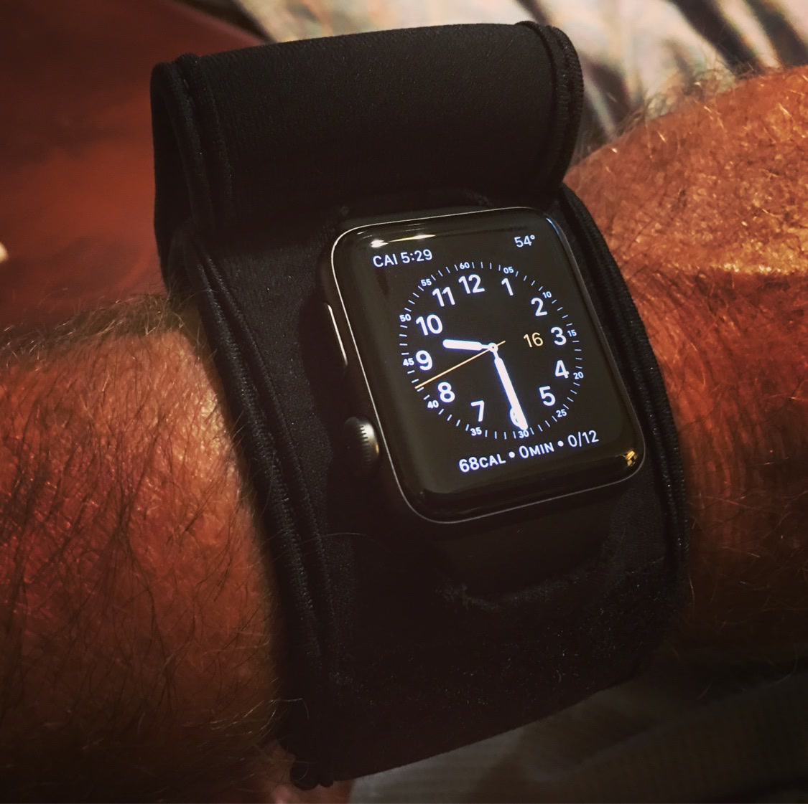

From the blog
Gym Strong: Guard Your Watch Through Every Workout
November 3, 2026

The gym is a tough place for a watch. Bars, plates, racks, and machines all sit close to your wrist, and sweat and chalk add wear over time. You still want the time, your steps, and your workout data right there, so leaving the watch in a locker is not always the answer. A sleeve lets you train hard and keep your watch guarded at the same time.
1. Weights and racks
Barbells, dumbbells, and plate racks are the biggest risk in the gym. One bump while you rack a bar or load a plate can mark a case for good. A neoprene cover puts a soft layer between your watch and the metal, so you can lift, press, and pull without guarding your wrist on every rep. Flip the flap up to check a timer or a set, then cover it again and keep moving.
2. Cardio and sweat
Running, rowing, and cycling all move your wrist again and again, and sweat builds up under any watch band. A sleeve helps guard the case while you move, and it wipes clean with ease after a session. Rinse it with fresh water when you get home, let it air dry, and it is ready for the next workout. Simple care keeps both the sleeve and the watch in good shape.
3. Classes and courts
Classes, courts, and turf work add their own risks. Mats, balls, nets, and other players all come close to your wrist, and a hard floor is unforgiving if you fall or dive for a ball. A covered watch takes those hits better than a bare one, and you still get your time and data at a glance when you need it. Train with focus, not with worry about your gear.
4. A habit that sticks
The best protection is the kind you do not have to think about. Keep the sleeve with your gym bag, slip it on before your warm up, and take it off when you shower and change. In a week it becomes part of your routine, just like your shoes and your water bottle. Your watch stays guarded, your workouts stay on track, and you never have to choose between training hard and keeping your gear nice.
You bought your watch to use it, not to baby it through every workout. Cover it, train hard, and bring it home looking new. That is what the WATCH-ET sleeve is for: real protection for real workouts, day after day.
Tired of babying your watch?
Medium $23 fits watches up to 48mm. Large $25 fits up to 53mm. Five colors.
Order Yours More Tips